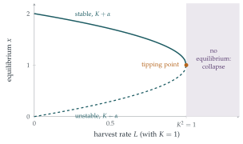

STEP II 1995, Question 8
Read the question before you go on. It is in the STEP Support Programme’s question database: step.maths.org/questions/95-s2-q8
The hook
A population with unlimited food grows exponentially. Real populations run out of room: growth slows as the population approaches what the environment can support, its carrying capacity. The simplest model of this, the logistic equation, is in the first half of the question, and it describes everything from bacteria in a dish to the spread of a new technology.
The second half asks a question with enormous practical stakes: what happens if we harvest the population at a steady rate? Below a certain threshold, the population adjusts to a new, lower equilibrium. But push the harvest past that threshold, even slightly, and the equilibrium vanishes and the population crashes to zero. This is the mathematics behind the collapse of fisheries, and the reason fishing quotas exist.
Before you start
Before solving anything, sketch the growth rate \((2K - x)x\) as a function of \(x\). Where is it zero? Where positive? What does that tell you about how \(x\) will behave?
The rate is zero at \(x = 0\) and \(x = 2K\), positive in between and negative beyond \(2K\). So a population starting between \(0\) and \(2K\) grows towards \(2K\), and one starting above \(2K\) shrinks towards it. The carrying capacity is \(2K\), and the growth is fastest at \(x = K\), where the rate is \(K^2\). You can predict the long-term behaviour without solving the equation.
Working it through
Stage 1 Solving the logistic equation
Separate the variables: \(\displaystyle\int \frac{\mathrm{d}x}{(2K - x)x} = \int \mathrm{d}t\). Split the left-hand side into partial fractions.
\(\dfrac{1}{(2K - x)x} = \dfrac{1}{2K}\left(\dfrac1x + \dfrac{1}{2K - x}\right)\), so \[\frac{1}{2K}\ln\frac{x}{2K - x} = t + C.\] At \(t = 0\), \(x = K\), so \(\ln 1 = 0\) and \(C = 0\). Then \(\frac{x}{2K - x} = e^{2Kt}\), giving \[x = \frac{2Ke^{2Kt}}{1 + e^{2Kt}} = \frac{2K}{1 + e^{-2Kt}} = K + K\frac{1 - e^{-2Kt}}{1 + e^{-2Kt}}. \qed\] The fraction is \(\tanh(Kt)\), so \(x = K + K\tanh Kt\): an S-shaped curve rising from \(K\) towards \(2K\). As \(t \to \infty\), \(e^{-2Kt} \to 0\) and \(x \to 2K\).
Stage 2 Harvesting
Removing bacteria at rate \(L\) gives \[\frac{\mathrm{d}x}{\mathrm{d}t} = (2K - x)x - L.\]
Complete the square in \((2K - x)x - L\). Where are its zeros?
\((2K - x)x - L = K^2 - L - (x - K)^2 = \alpha^2 - (x - K)^2 = \bigl(\alpha - (x - K)\bigr)\bigl(\alpha + (x - K)\bigr)\). The equilibria are \(x = K \pm \alpha\).
Now substitute \(y = x - K + \alpha\). What equation does \(y\) satisfy? Compare it with the original logistic equation.
With \(y = x - K + \alpha\), we have \(x - K = y - \alpha\), so \(\alpha + (x - K) = y\) and \(\alpha - (x - K) = 2\alpha - y\). Hence \[\frac{\mathrm{d}y}{\mathrm{d}t} = (2\alpha - y)y,\] the logistic equation again, with \(K\) replaced by \(\alpha\). Initially \(y(0) = K - K + \alpha = \alpha\), exactly as \(x(0) = K\) in the first part. So by Stage 1 (with \(\alpha\) for \(K\)), \(y(t) = \alpha + \alpha\tanh\alpha t \to 2\alpha\), and therefore \[x(t) = K + \alpha\tanh\alpha t \to K + \alpha. \qed\]
Looking back
Qualitative first. The sign of the growth rate predicted the long-term behaviour before any solving.
Completing the square reveals the equilibria. The harvested equation had equilibria at \(K \pm \alpha\).
A substitution reduces a new problem to an old one. Shifting the variable turned the harvested equation into the logistic equation already solved.
What’s really going on
The harvested equation has two equilibria, \(K + \alpha\) and \(K - \alpha\). The upper one is stable: a population slightly above or below it returns to it. The lower one is unstable: a population just below \(K - \alpha\) declines to extinction. As the harvest rate \(L\) increases, \(\alpha = \sqrt{K^2 - L}\) shrinks, and the two equilibria approach each other; at \(L = K^2\) they merge, and for \(L > K^2\) there is no equilibrium at all, and every population collapses (Figure 8.3.1). This is a saddle-node bifurcation, the simplest kind of tipping point. Its sting is that nothing dramatic warns of it: as \(L\) approaches \(K^2\), the equilibrium population declines only gently, and then suddenly there is no equilibrium. Reducing the harvest afterwards may not help, because the population may already be below the unstable threshold.

Maximum sustainable yield
What is the largest harvest the population can sustain? It is \(L = K^2\), the peak of the growth rate \((2K - x)x\), achieved when the population is held at \(K\), half the carrying capacity. Fisheries science adopted this “maximum sustainable yield” as a management target in the mid-twentieth century. But harvesting exactly at the maximum puts the system exactly at the tipping point, where the slightest overestimate of \(K\), or a bad year, causes collapse. The Grand Banks cod fishery off Newfoundland, one of the richest in the world for five hundred years, collapsed in the early 1990s, and in 1992 the Canadian government imposed a moratorium that put tens of thousands of people out of work. The stocks have still not fully recovered.
Logistic growth elsewhere
The logistic equation was proposed by Pierre-François Verhulst in 1838 to model human populations. The same S-shaped curve describes the spread of an epidemic in its early stages, the adoption of new technologies, autocatalytic chemical reactions and the growth of tumours. Its discrete-time version, the logistic map, behaves very differently: it can be chaotic, as we will see in Section 8.7.
The thinking skill
For an equation \(x' = f(x)\), the equilibria are the zeros of \(f\), and the sign of \(f\) between them tells you which way solutions move.
An equilibrium where \(f\) changes from positive to negative is stable; one where it changes from negative to positive is unstable. Drawing the graph of \(f\) often answers the important questions without solving anything.
Try this next
Starting low. With harvesting and \(K^2 > L\), show that if \(x(0) < K - \alpha\) then the population reaches zero in finite time. (Hint: what does \(y\) do when \(y(0) < 0\)?)
Over-harvesting. If \(L > K^2\), write \(\beta = \sqrt{L - K^2}\). Solve \(x' = -(x - K)^2 - \beta^2\) with \(x(0) = 2K\) and find when the population reaches zero.
Proportional harvesting. Suppose instead that a fixed fraction of the population is removed: \(x' = (2K - x)x - hx\). Find the equilibria and show that the population survives for all \(h < 2K\). Why is this policy safer?
Half-time. In the unharvested case, find the time at which the population reaches \(\frac32K\).
Further reading
Steven Strogatz, Nonlinear Dynamics and Chaos (CRC Press). Chapter 3 is about bifurcations, with this harvesting model as an exercise.
Nicholas Britton, Essential Mathematical Biology (Springer). Population models for undergraduates.
Mark Kurlansky, Cod: A Biography of the Fish That Changed the World (Penguin). The history of the cod fishery and its collapse.